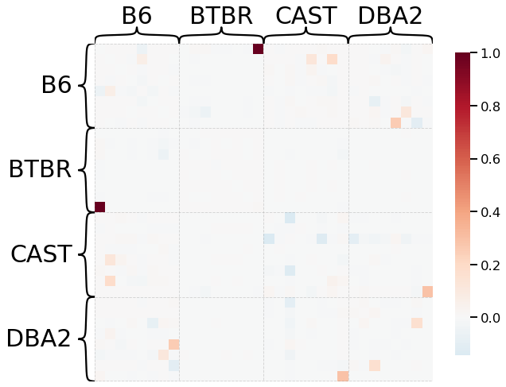
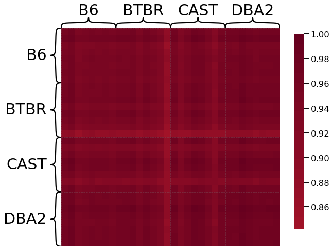
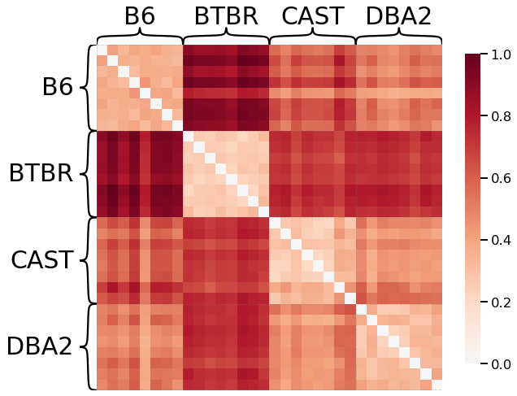

Exploring Different Kernels
Contents
import numpy as np
import networkx as nx
import seaborn as sns
Exploring Different Kernels¶
Here we construct a basic pipeline of comparing different graph kernels from the GraKel package.
First, we load in 32 networks that were generated from MRI scans of mice brains, provided by Graspologic. The mice came from 4 different genotypes, and there were 8 mice per genotype.
Load Data¶
from graspologic.datasets import load_mice
from grakel import Graph
# Load the full mouse dataset
mice = load_mice()
# Stack all adjacency matrices in a 3D numpy array
graphs = np.array(mice.graphs)
print(graphs.shape)
print(graphs[0])
sns.heatmap(graphs[0])
# Convert adjacency matrices to grakel objects
Gs = []
for graph in graphs:
test = Graph(initialization_object = graph, node_labels=np.arange(0, 332))
Gs.append(test)
print(len(Gs))
(32, 332, 332)
[[0.000e+00 3.735e+03 1.060e+03 ... 0.000e+00 1.000e+00 1.040e+02]
[3.735e+03 0.000e+00 2.849e+03 ... 0.000e+00 1.000e+00 6.300e+01]
[1.060e+03 2.849e+03 0.000e+00 ... 0.000e+00 0.000e+00 9.000e+00]
...
[0.000e+00 0.000e+00 0.000e+00 ... 0.000e+00 1.090e+02 0.000e+00]
[1.000e+00 1.000e+00 0.000e+00 ... 1.090e+02 0.000e+00 4.600e+01]
[1.040e+02 6.300e+01 9.000e+00 ... 0.000e+00 4.600e+01 0.000e+00]]
32
print(Gs[1].index_node_labels)
#print(Gs[0].get_labels(purpose="adjacency"))
[ 0 1 2 3 4 5 6 7 8 9 10 11 12 13 14 15 16 17
18 19 20 21 22 23 24 25 26 27 28 29 30 31 32 33 34 35
36 37 38 39 40 41 42 43 44 45 46 47 48 49 50 51 52 53
54 55 56 57 58 59 60 61 62 63 64 65 66 67 68 69 70 71
72 73 74 75 76 77 78 79 80 81 82 83 84 85 86 87 88 89
90 91 92 93 94 95 96 97 98 99 100 101 102 103 104 105 106 107
108 109 110 111 112 113 114 115 116 117 118 119 120 121 122 123 124 125
126 127 128 129 130 131 132 133 134 135 136 137 138 139 140 141 142 143
144 145 146 147 148 149 150 151 152 153 154 155 156 157 158 159 160 161
162 163 164 165 166 167 168 169 170 171 172 173 174 175 176 177 178 179
180 181 182 183 184 185 186 187 188 189 190 191 192 193 194 195 196 197
198 199 200 201 202 203 204 205 206 207 208 209 210 211 212 213 214 215
216 217 218 219 220 221 222 223 224 225 226 227 228 229 230 231 232 233
234 235 236 237 238 239 240 241 242 243 244 245 246 247 248 249 250 251
252 253 254 255 256 257 258 259 260 261 262 263 264 265 266 267 268 269
270 271 272 273 274 275 276 277 278 279 280 281 282 283 284 285 286 287
288 289 290 291 292 293 294 295 296 297 298 299 300 301 302 303 304 305
306 307 308 309 310 311 312 313 314 315 316 317 318 319 320 321 322 323
324 325 326 327 328 329 330 331]
from graspologic.plot import heatmap
import matplotlib.pyplot as plt
ax = heatmap(graphs[0], context="talk", transform="simple-all")
ax.figure.set_facecolor('w')
print(np.count_nonzero(graphs[0])/graphs[0].size)
0.6602917694875889
Calculate Kernel Matrices¶
We will look at the Random Walk Kernel, Shortest Path Kernel, and the Multiscale Laplacian Kernel.
Random Walk Kernel¶
Quantifies similiarity based on the number of common walks between graphs.
from grakel.kernels import RandomWalk
kernel = RandomWalk()
Ks = kernel.fit_transform(Gs)
print(Ks.shape)
(32, 32)
from grakel.kernels import RandomWalk
kernel = RandomWalk()
k = kernel.pairwise_operation(Gs[0].adjacency_matrix, Gs[2].adjacency_matrix)
print(k)
-0.0008656163068823838
diags = kernel.diagonal()
print(diags)
[ 0.21532043 0.06171051 -0.00565717 -0.13675859 -0.06408148]
kernel = RandomWalk(lamda= 0.001)
kernel.initialize()
K = kernel.fit_transform([Gs[0], Gs[1], Gs[2], Gs[3], Gs[4], Gs[5]])
print(K)
[[ 0.21532043 0.45186852 -0.08654735 -0.27355467 0.08637493 0.21076882]
[ 0.45186852 0.06171051 0.85338168 -0.16715328 0.04169041 0.12150894]
[-0.08654735 0.85338168 -0.00565717 -0.18874672 -0.03343176 -0.27514547]
[-0.27355467 -0.16715328 -0.18874672 -0.13675859 -0.23487768 1.32563873]
[ 0.08637493 0.04169041 -0.03343176 -0.23487768 -0.06408148 0.08014589]
[ 0.21076882 0.12150894 -0.27514547 1.32563873 0.08014589 -0.05217357]]
from graspologic.plot import heatmap
scaled_dissimilarity = K / np.max(K)
_ = heatmap(scaled_dissimilarity, context="talk")

from graspologic.plot import heatmap
scaled_dissimilarity = Ks / np.max(Ks)
_ = heatmap(scaled_dissimilarity, context="talk", inner_hier_labels=mice.labels)
### match nodes before?

from grakel.kernels import RandomWalkLabeled
kernel = RandomWalkLabeled()
Ks = kernel.fit_transform(Gs)
print(Ks.shape)
---------------------------------------------------------------------------
ValueError Traceback (most recent call last)
/var/folders/l5/z1zgtcc52355lzh_8yrfzxnw0000gn/T/ipykernel_85070/3920753686.py in <module>
2
3 kernel = RandomWalkLabeled()
----> 4 Ks = kernel.fit_transform(Gs)
5
6 print(Ks.shape)
~/opt/anaconda3/lib/python3.9/site-packages/grakel/kernels/kernel.py in fit_transform(self, X)
192 """
193 self._method_calling = 2
--> 194 self.fit(X)
195
196 # Transform - calculate kernel matrix
~/opt/anaconda3/lib/python3.9/site-packages/grakel/kernels/kernel.py in fit(self, X, y)
121 raise ValueError('`fit` input cannot be None')
122 else:
--> 123 self.X = self.parse_input(X)
124
125 # Return the transformer
~/opt/anaconda3/lib/python3.9/site-packages/grakel/kernels/random_walk.py in parse_input(self, X)
376 x.desired_format("adjacency")
377 Ax = x.get_adjacency_matrix()
--> 378 Lx = x.get_labels(purpose="adjacency")
379 Lx = [Lx[idx] for idx in range(Ax.shape[0])]
380 proc.append((Ax, Lx, Ax.shape[0]))
~/opt/anaconda3/lib/python3.9/site-packages/grakel/graph.py in get_labels(self, label_type, purpose, return_none)
728 self.desired_format("adjacency", warn=True)
729 if label_type == "vertex":
--> 730 if not bool(self.index_node_labels):
731 if self.construct_label:
732 self.construct_labels(label_type, purpose)
ValueError: The truth value of an array with more than one element is ambiguous. Use a.any() or a.all()
Shortest Path Kernel¶
from grakel.kernels import ShortestPath
kernel = ShortestPath(with_labels=False)
Ks = kernel.fit_transform(Gs)
print(Ks.shape)
(32, 32)
from graspologic.plot import heatmap
scaled_dissimilarity = Ks / np.max(Ks)
ax = heatmap(scaled_dissimilarity, context="talk", inner_hier_labels=mice.labels)
ax.figure.set_facecolor('w')

Multiscale Laplacian Kernel¶
from grakel.kernels import MultiscaleLaplacian
kernel = MultiscaleLaplacian()
Ks = kernel.fit_transform(Gs)
print(Ks.shape)
---------------------------------------------------------------------------
ValueError Traceback (most recent call last)
/var/folders/l5/z1zgtcc52355lzh_8yrfzxnw0000gn/T/ipykernel_85070/1431234028.py in <module>
2
3 kernel = MultiscaleLaplacian()
----> 4 Ks = kernel.fit_transform(Gs)
5
6 print(Ks.shape)
~/opt/anaconda3/lib/python3.9/site-packages/grakel/kernels/kernel.py in fit_transform(self, X)
192 """
193 self._method_calling = 2
--> 194 self.fit(X)
195
196 # Transform - calculate kernel matrix
~/opt/anaconda3/lib/python3.9/site-packages/grakel/kernels/kernel.py in fit(self, X, y)
121 raise ValueError('`fit` input cannot be None')
122 else:
--> 123 self.X = self.parse_input(X)
124
125 # Return the transformer
~/opt/anaconda3/lib/python3.9/site-packages/grakel/kernels/multiscale_laplacian.py in parse_input(self, X)
176 'graph or an iterable with at least 1 '
177 'and at most 3 elements\n')
--> 178 phi_d = x.get_labels()
179 A = x.get_adjacency_matrix()
180 try:
~/opt/anaconda3/lib/python3.9/site-packages/grakel/graph.py in get_labels(self, label_type, purpose, return_none)
735 return None
736 else:
--> 737 raise ValueError('Graph does not have any labels for vertices.')
738
739 return self.index_node_labels
ValueError: Graph does not have any labels for vertices.
From Ben’s NDS class Network Data Science¶
from graspologic.embed import OmnibusEmbed
# Embed using Omni
embedder = OmnibusEmbed(n_elbows=3)
omni_embedding = embedder.fit_transform(graphs)
print(omni_embedding.shape)
(32, 332, 9)
# Create dissimilarity matrix
dissimilarity_matrix = np.zeros((len(graphs), len(graphs)))
for i, embedding1 in enumerate(omni_embedding):
for j, embedding2 in enumerate(omni_embedding):
dist = np.linalg.norm(embedding1 - embedding2, ord="fro")
dissimilarity_matrix[i, j] = dist
from graspologic.plot import heatmap
scaled_dissimilarity = dissimilarity_matrix / np.max(dissimilarity_matrix)
_ = heatmap(scaled_dissimilarity, context="talk", inner_hier_labels=mice.labels)
